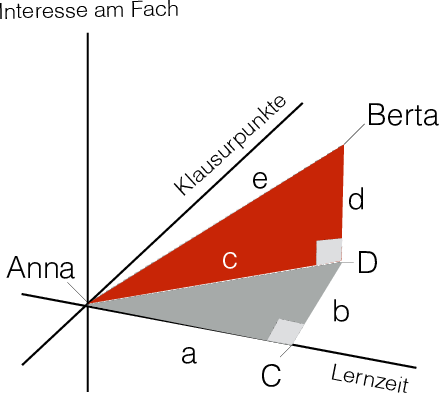
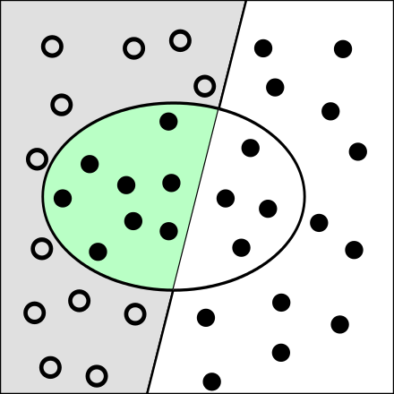
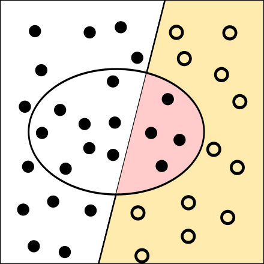
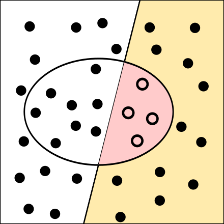
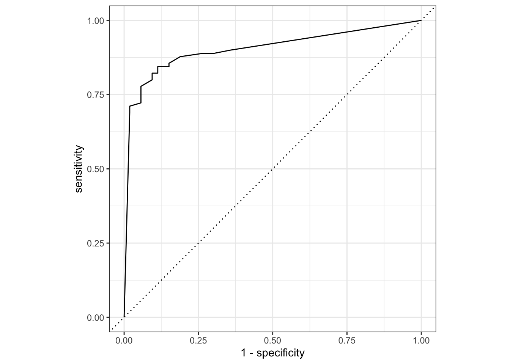
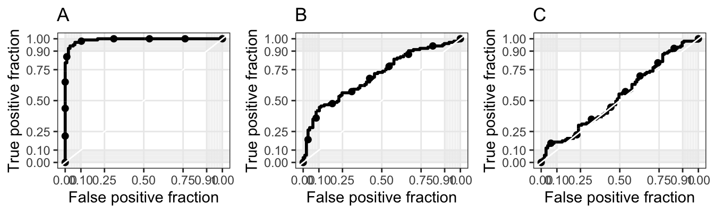
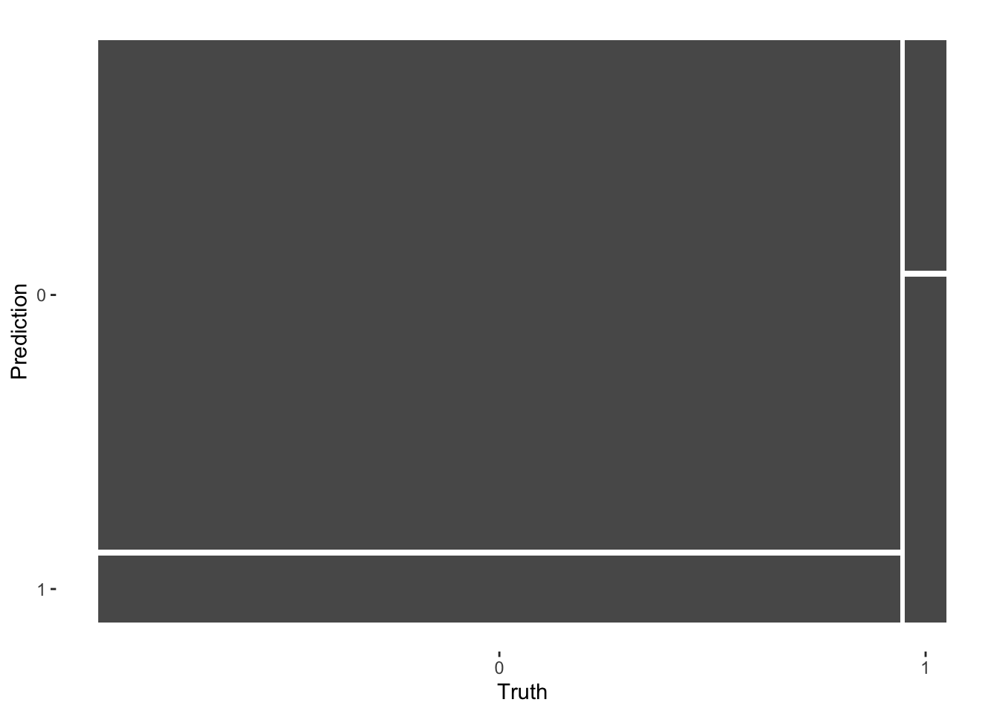

7 kNN
7.1 Lernsteuerung
7.1.1 Überblick
In diesem Kapitel geht es um das Verfahren KNN, K-Nächste-Nachbarn (\(k\) nearest neighbors).
7.1.2 Lernziele
- Sie sind in der Lage, einfache Klassifikationsmodelle zu spezifizieren mit tidymodels
- Sie können den knn-Algorithmus erläutern
- Sie können den knn-Algorithmus in tidymodels anwenden
- Sie können die Gütemetriken von Klassifikationsmodellen einschätzen
7.1.3 Literatur
- Rhys, Kap. 3
- Timbers et al., Kap. 5
7.2 Benötigte R-Pakete
7.3 Intuitive Erklärung
K-Nächste-Nachbarn (\(k\) nearest neighbors, kNN) ist ein einfacher Algorithmus des maschinellen Lernens, der sowohl für Klassifikation als auch für numerische Vorhersage (Regression) genutzt werden kann. Wir werden kNN als Beispiel für eine Klassifikation betrachten.
Betrachen wir ein einführendes Beispiel von Rhys (2020), für das es eine Online-Quelle gibt. Stellen Sie sich vor, wir laufen durch englische Landschaft, vielleicht die Grafschaft Kent, und sehen ein kleines Tier durch das Gras huschen. Eine Schlange?! In England gibt es (laut Rhys (2020)) nur eine giftige Schlange, die Otter (Adder). Eine andere Schlange, die Grass Snake ist nicht giftig, und dann kommt noch der Slow Worm in Frage, der gar nicht zur Familie der Schlangen gehört. Primär interessiert uns die Frage, haben wir jetzt eine Otter gesehen? Oder was für ein Tier war es?
Zum Glück wissen wir einiges über Schlangen bzw. schlangenähnliche Tiere Englands. Nämlich können wir die betreffenden Tierarten in Größe und Aggressivität einschätzen, das ist in Abbildung Abbildung 7.1 dargestellt.

Der Algorithmus von kNN sieht einfach gesagt vor, dass wir schauen, welcher Tierarten Tiere mit ähnlicher Aggressivität und Größe angehören. Die Tierart die bei diesen “Nachbarn” hinsichtlich Ähnlichkeit relevanter Merkmale am häufigsten vertreten ist, ordnen wir die bisher unklassifizierte Beobachtung zu.
Etwas zugespitzt:
Wenn es quakt wie eine Ente ü¶Ü, l√§uft wie eine Ente ü¶Üund aussieht wie eine Ente ü¶Ü, dann ist es eine Ente ü¶Ü.
Die Anzahl \(k\) der nächsten Nachbarn können wir frei wählen; der Wert wird nicht vom Algorithmuss bestimmt. Solche vom Nutzi zu bestimmenden Größen nennt man auch Tuningparameter.
7.4 Krebsdiagnostik 1
Betrachten wir ein Beispiel von Timbers, Campbell, und Lee (2022), das hier frei eingesehen werden kann.
Die Daten sind so zu beziehen:
data_url <- "https://raw.githubusercontent.com/UBC-DSCI/introduction-to-datascience/master/data/wdbc.csv"
cancer <- read.csv(data_url)In diesem Beispiel versuchen wir Tumore der Brust zu klassifizieren, ob sie einen schweren Verlauf (maligne, engl. malignant) oder einen weniger schweren Verlauf (benigne, engl. benign) erwarten lassen. Der Datensatz ist hier näher erläutert.
Wie in Abbildung 7.2 ersichtlich, steht eine Tumordiagnose (malignant vs. benign) in Abhängigkeit von Umfang (engl. perimeter) und Konkavität, die “Gekrümmtheit nach innen”.

In diesem Code-Beispiel wird die seit R 4.1.0 verfügbare R-native Pfeife verwendet. Wichtig ist vielleicht vor allem, dass diese Funktion nicht läuft auf R-Versionen vor 4.1.0. Einige Unterschiede zur seit längerem bekannten Magrittr-Pfeife sind hier erläutert.
Wichtig ist, dass die Merkmale standardisiert sind, also eine identische Skalierung aufweisen, da sonst das Merkmal mit kleinerer Skala weniger in die Berechnung der Nähe (bzw. Abstand) eingeht.
Für einen neuen, bisher unklassifizierten Fall suchen nur nun nach einer Diagnose, also nach der am besten passenden Diagnose (maligne oder benigne), s. Abbildung 7.3, wieder aus Timbers, Campbell, und Lee (2022). Ihr Quellcode für dieses Diagramm (und das ganze Kapitel) findet sich hier.

Wir können zunächst den (im euklidischen Koordinatensystem) nächst gelegenen Fall (der “nächste Nachbar”) betrachten, und vereinbaren, dass wir dessen Klasse als Schätzwert für den unklassiffizierten Fall übernehmen, s. Abbildung 7.4.
Betrachten wir einen anderen zu klassifizierenden Fall, s. Abbildung 7.5. Ob hier die Klassifikation von “benign” korrekt ist? Womöglich nicht, denn viele andere Nachbarn, die etwas weiter weg gelegen sind, gehören zur anderen Diagnose, malign.

Um die Vorhersage zu verbessern, können wir nicht nur den nächstgelegenen Nachbarn betrachten, sondern die \(k\) nächstgelegenen, z.B. \(k=3\), s. Abb Abbildung 7.6.

Die Entscheidungsregel ist dann einfach eine Mehrheitsentscheidung: Wir klassifizieren den neuen Fall entsprechend der Mehrheit in den \(k\) nächst gelegenen Nachbarn.
7.5 Berechnung der Nähe
Es gibt verschiedenen Algorithmen, um die Nähe bzw. Distanz der Nachbarn zum zu klassifizieren Fall zu berechnen.
Eine gebräuchliche Methode ist der euklidische Abstand, der mit Pythagoras berechnet werden kann, s. Abbildung 7.7 aus Sauer (2019).

Wie war das noch mal?
\[c^2 = a^2 + b^2\]
Im Beispiel oben also:
\(c^2 = 3^2 + 4^2 = 5^2\)
Damit gilt: \(c = \sqrt{c^2} = \sqrt{5^2}=5\).
Im 2D-Raum ist das so einfach, dass man das (fast) mit bloßem Augenschein entscheiden kann. In mehr als 2 Dimensionen wird es aber schwierig für das Auge, wie ein Beispiel aus Timbers, Campbell, und Lee (2022) zeigt.
Allerdings kann man den guten alten Pythagoras auch auf Dreiecke mit mehr als zwei Dimensionen anwenden, s. Abbildung 7.8 aus Sauer (2019), Kap. 21.1.2.

Bleiben wir beim Beispiel von Anna und Berta und nehmen wir eine dritte Variable hinzu (Statistikliebe). Sagen wir, der Unterschied in dieser dritten Variable zwischen Anna und Berta betrage 2.
Es gilt:
\[ \begin{aligned} e^2 &= c^2 + d^2 \\ e^2 &= 5^2 + 2^2 \\ e^2 &= 25 + 4\\ e &= \sqrt{29} \approx 5.4 \end{aligned} \]
7.6 kNN mit Tidymodels
7.6.1 Analog zu Timbers et al.
Eine Anwendung von kNN mit Tidymodels ist in Timbers, Campbell, und Lee (2022), Kap. 5.6, hier beschrieben.
Die Daten aus Timbers, Campbell, und Lee (2022) finden sich in diesem Github-Repo-
Die (z-transformierten) Daten zur Tumorklassifikation können hier bezogen werden.
data_url <- "https://raw.githubusercontent.com/UBC-DSCI/introduction-to-datascience/master/data/wdbc.csv"
cancer <- read_csv(data_url)Timbers, Campbell, und Lee (2022) verwenden in Kap. 5 auch noch nicht standardisierte Daten, unscales_wdbc.csv, die hier als CSV-Datei heruntergeladen werden können.
cancer_unscales_path <- "https://raw.githubusercontent.com/UBC-DSCI/introduction-to-datascience/master/data/unscaled_wdbc.csv"
unscaled_cancer <- read_csv(cancer_unscales_path) |>
mutate(Class = as_factor(Class)) |>
select(Class, Area, Smoothness)
unscaled_cancerDamit Tidymodels ein Modell als Klassifikation versteht, muss die AV als factor definiert sein. Man sollte diese Transformation außerhalb eines Rezepts druchführen.\(\square\)
7.6.2 Rezept definieren
uc_recipe <- recipe(Class ~ ., data = unscaled_cancer)
print(uc_recipe)Und jetzt die z-Transformation:
uc_recipe <-
uc_recipe |>
step_scale(all_predictors()) |>
step_center(all_predictors())Die Schritte prep() und bake() sparen wir uns, da fit() und predict() bzw. last_fit() das für uns besorgen.
7.6.3 Modell definieren
Tidymodels greift auf den Engine (das Paket) kknn zurück, das im Standard die Euklidische Distanz aus Distanzmaß berechnet. Daher muss die Engine nicht extra spezifiziert werden.
knn_spec <-
nearest_neighbor() |>
set_mode("classification")
knn_spec
## K-Nearest Neighbor Model Specification (classification)
##
## Computational engine: kknnIn der Voreinstellung wird \(k=5\) gewählt.
Der Parameter \(k\) im knn-Algorithmus wird nicht über die Daten bestimmt, sondern muss durch dis Nutzi ausgewählt werden. Solche Parameter nennt man Tuningparameter (synonym: Hyperparameter), s. Kapitel 8.\(\square\)
Das Paket dials (Teil von Tidymodels) schlägt Werte für \(k\) vor, das ist praktisch. Mehr dazu in Kapitel 8.
7.6.4 Workflow definieren und fitten
Unser Workflow ist die “Summe” von Rezept und Modell:
knn_wf <- workflow() |>
add_recipe(uc_recipe) |>
add_model(knn_spec) Welche Variablen waren noch mal Teil des Rezepts? Mit str(uc_recipe) bekommt man eine Einblick in die struktur eines Objekts. Dann ziehen wir uns das Objekt, das die Infos zu den Variablen im Rezept beheimatet:
Nat√ºrlich kann man auch einfach seinen Code anschauen. üòÅ
Den Workflow fitten wir dann:
knn_fit <-
knn_wf |>
fit(data = unscaled_cancer)
knn_fit
## ══ Workflow [trained] ══════════════════════════════════════════════════════════
## Preprocessor: Recipe
## Model: nearest_neighbor()
##
## ── Preprocessor ────────────────────────────────────────────────────────────────
## 2 Recipe Steps
##
## • step_scale()
## • step_center()
##
## ── Model ───────────────────────────────────────────────────────────────────────
##
## Call:
## kknn::train.kknn(formula = ..y ~ ., data = data, ks = min_rows(5, data, 5))
##
## Type of response variable: nominal
## Minimal misclassification: 0.1072056
## Best kernel: optimal
## Best k: 57.6.5 Vorhersagen
7.7 Krebsdiagnostik 2
Im Kapitel 5 greifen Timbers, Campbell, und Lee (2022) die Aufteilung in Train- vs. Test-Sample noch nicht auf (aber in Kapitel 6).
Da in diesem Kurs diese Aufteilung aber schon besprochen wurde, soll dies hier auch dargestellt werden.
cancer_split <- initial_split(cancer, strata = Class)
cancer_train <- training(cancer_split)
cancer_test <- testing(cancer_split) 7.7.1 Rezept definieren
cancer_recipe <- recipe(
Class ~ Smoothness + Concavity, data = cancer_train) |>
step_scale(all_predictors()) |>
step_center(all_predictors())7.7.2 Modell definieren
knn_spec <- nearest_neighbor() |>
#set_engine("kknn") |>
set_mode("classification")7.7.3 Workflow definieren
knn_wf <- workflow() %>%
add_recipe(cancer_recipe) %>%
add_model(knn_spec)
knn_wf
## ══ Workflow ════════════════════════════════════════════════════════════════════
## Preprocessor: Recipe
## Model: nearest_neighbor()
##
## ── Preprocessor ────────────────────────────────────────────────────────────────
## 2 Recipe Steps
##
## • step_scale()
## • step_center()
##
## ── Model ───────────────────────────────────────────────────────────────────────
## K-Nearest Neighbor Model Specification (classification)
##
## Computational engine: kknn7.7.4 Vorhersagen
Im Gegensatz zu Timbers, Campbell, und Lee (2022) verwenden wir hier last_fit() und collect_metrics(), da wir dies bereits eingeführt haben und künftig darauf aufbauen werden.
cancer_test_fit <- last_fit(knn_wf, cancer_split)
cancer_test_fit7.7.5 Modellgüte
cancer_test_fit %>% collect_metrics()Die eigentlichen Predictions stecken in der Listenspalte .predictions im Fit-Objekt.
names(cancer_test_fit)
## [1] "splits" "id" ".metrics" ".notes" ".predictions"
## [6] ".workflow"Genau genommen ist .predictions eine Listenspalte, in der in jeder Zeile (und damit Zelle) eine Tabelle (Tibble) steht. Wir haben nur eine Zeile und wollen das erste Element dieser Spalte herausziehen, die Vorhersagen (Wahrscheinlichkeit) für benigne Struktur (\(\hat{y}\); die Spalte heißt übrigens .pred_B). Außerdem brauchen wir die tatsächlichen Diagnosen, \(y\), die “wohnen” in der Spalte mit Namen Class. Das Element .predictions ist eine Liste(nspalte), die aus Tibbles besteht. Ziehen wir uns den ersten Tibble heraus mit pluck():
cancer_test_fit %>%
pluck(".predictions", 1) %>% str()
## tibble [143 × 6] (S3: tbl_df/tbl/data.frame)
## $ .pred_B : num [1:143] 0 0.36 0 0 0.84 0 1 0.04 0.2 0 ...
## $ .pred_M : num [1:143] 1 0.64 1 1 0.16 1 0 0.96 0.8 1 ...
## $ .row : int [1:143] 1 5 6 9 14 18 22 27 35 36 ...
## $ .pred_class: Factor w/ 2 levels "B","M": 2 2 2 2 1 2 1 2 2 2 ...
## $ Class : Factor w/ 2 levels "B","M": 2 2 2 2 2 2 1 2 2 2 ...
## $ .config : chr [1:143] "Preprocessor1_Model1" "Preprocessor1_Model1" "Preprocessor1_Model1" "Preprocessor1_Model1" ...Natürlich kann man auch (einfacher) collect_predictions verwenden anstelle von pluck.
Hat man die Vorhersagen (und die wahren Werte) zur Hand, kann man die richtigen und falschen Werte gegenüberstellen lassen. So eine Tabelle nennt man auch eine Konfusionsmatrix1:
cancer_test_predictions <-
cancer_test_fit %>%
collect_predictions() # alternativ: pluck(".predictions", 1)
confusion <- cancer_test_predictions |>
conf_mat(truth = Class, estimate = .pred_class)
confusion
## Truth
## Prediction B M
## B 75 6
## M 15 477.7.6 Schwellenwerte
Im Standard wird eine Beobachtung der Klasse mit der höchsten Wahrscheinlichkeit zugeordnet. Möchte man das ändern, hilft das R-Paket probably.
7.7.7 Visualisierung
Verbildlichen wir die Konfusionsmatrix, so dass wir sehen welche B als B klassifiziert wurden und welche M als M klassifiziert wurden (bzw. welche nicht), s. ?fig-conf-bm.
# autoplot(confusion, type = "mosaic")7.8 Klassifikationsgüte
7.8.1 Die vier möglichen Ergebnisse eines Tests
Ein Test kann vier verschiedenen Ergebnisse haben:
| Wahrheit | Als negativ (-) vorhergesagt | Als positiv (+) vorhergesagt | Summe |
|---|---|---|---|
| In Wahrheit negativ (-) | Richtig negativ (RN) | Falsch positiv (FP) | N |
| In Wahrheit positiv (+) | Falsch negativ (FN) | Richtig positiv (RN) | P |
| Summe | N* | P* | N+P |
Von den vier möglichen Ergebnissen sind zwei falsch (und zwei richtig). Ein Test kann also zwei Arten von Fehlern machen, s. Abbildung 7.9. Dort kann man die Punkte im roten Hintergrund als kranke Menschen verstehen (links des schrägen Strichs); auf der anderen Seite sind man gesunde Menschen (grüner Hintergrund). Die Punkte in der Ellipse zeigen die Klassifikationsergebnisse bzw. -fehler.
- Fehler erster Art: Gesunde als krank klassifizieren (“Fehlalarm”)
- Fehler zweiter Art: Kranke als gesund klassifizieren (“Übersehfehler”)
.png)
Quelle: Von Nichtich - Eigenes Werk, Gemeinfrei
Bei Wikipedia findet sich eine nützliche Erläuterung der Kennzahlen der Klassifikationsgüte, vgl. Abbildung 7.10 und Abbildung 7.11.




Es ist einfach, in nur einem der beiden Fehlerarten gut abzuschneiden. So könnte ein Test alle Personen als krank klassifizieren. Damit hätte er auomatisch keine Übersehfehler. Leider wären aber potenziell viele Fehlalarme dabei. Die Höhe des Übersehfehler und die Höhe der Fehlalarme müssen daher nicht gleich sein. Man muss daher beide Fehlerarten berücksichtigen, um die Güte eines Tests einzuschätzen. Welcher Fehler schwerer wiegt, der Fehlalarm oder der Übersehfehler, hängt vom Sachgegenstand ab und ist keine Frage der Statistik.\(\square\)
7.8.2 Kennzahlen der Klassfikation
Es gibt eine (verwirrende) Vielfalt von Kennzahlen, um die Güte einer Klassifikation einzuschätzen. In Tabelle 7.1 sind einige davon aufgeführt.
| Name | Definition | Synonyme |
|---|---|---|
| FP-Rate | FP/N | Alphafehler, Typ-1-Fehler, 1-Spezifität, Fehlalarm |
| RP-Rate | RP/N | Power, Sensitivität, 1-Betafehler, Recall |
| FN-Rate | FN/N | Fehlender Alarm, Befafehler |
| RN-Rate | RN/N | Spezifität, 1-Alphafehler |
| Pos. Vorhersagewert | RP/P* | Präzision, Relevanz |
| Neg. Vorhersagewert | RN/N* | Segreganz |
| Richtigkeit | (RP+RN)/(N+P) | Korrektklassifikationsrate, Gesamtgenauigkeit |
| Youden-Index | RN-Rate+RP-Rate-1 | Durchschnitt von Sensitivität und Spezifität |
In Sauer (2019), Kap. 19.6, findet sich einige Erklärung zu Kennzahlen der Klassifikationsgüte.
Auf der Seite des R-Pakets yardstick finden Sie eine Übersicht an unterstützter Kennzahlen.
7.8.3 Schwellenwerte der Klassifiktion
Im Standard wird ein Fall der Klasse zugeordnet, die die höchste Wahrscheinlichkeit hat. Mit dem R-Paket probably kann man (als Teil eines Post-Processing des Modellierens) diese Schwellenwerte2 ändern.
Beispiel 7.1 Da eine Ärztin auf keinen Fall einen Krebsfall übersehen möchte - da Sie den Übersehfehler als deutlich schlimmer einschätzt als den Fehlalarm - setzt sie die Schwelle für die Klasse “Gesund” auf 95%.\(\square\)
7.8.4 ROC-Kurve
Eine ROC-Kurve3 ist ein Graph, der die Modellgüte eines Klassfikationsmodells zu allen Schwellenwerten aufzeigt. Eine ROC-Kurve ist eine nützliche und gebräuchliche Methode zur Bestimmung der insgesamten Klassifikationsgüte eines Modells.
Die Kurve hat zwei Parameter:
- TP-Rate (Y-Achse)
- FP-Rate (X-Achse)
Praktisch würde man für die vorhergesagten Wahrscheinlichkeiten eines Klassifikationsmodells viele Schwellenwerte anlegen, z.B. von 0%, 1%, …, 100%. Für jeden Schwellenwert berechnet man die vorhergesagte Klasse. In tidymodels besorgt roc_curve diesen Job:
cancer_roc <-
cancer_test_predictions %>%
roc_curve(truth = Class, .pred_B)
cancer_rocMit autoplot kann man dann die ROC-Kurve zeichnen, s. Abbildung 7.12.

Die Fläche unter der Kurve (area under curve, AUC), bezogen auf die ROC-Kurve, ist ein Maß für die Güte der Klassifikation. Abbildung 7.13 aus Sauer (2019) stellt drei Beispiele von Klassifikationsgüten dar: sehr gute (A), gute (B) und schlechte (C). Ein hohe Klassifikationsgüte zeigt sich daran, dass eine hohe Richtig-Positiv-Rate mit einer geringen Fehlalarmquote einhergeht: Wir finden alle Kranken, aber nur die Kranken. Die ROC-Kurve “hängt oben links an der Decke”; der AUC-Wert geht gegen 1. Ein schlechter Klassifikator trifft so gut wie ein Münzwurf: Ist das Ereignis selten, hat er eine hohe Falsch-Positiv-Rate und eine geringe Falsch-Negativ-Rate. Ist das Ereignis hingegen häufig, liegen die Fehlerhöhen genau umgekehrt: Eine hohe Richtig-Positiv-Rate geht dann mit einer hohen Falsch-Positiv-Rate einher.

7.8.5 Krebstest-Beispiel
Betrachten wir diese Daten eines fiktiven Krebstest, aber mit realistischen Werte, s. Abbildung 7.14.
krebstest <- read_csv("data/krebstest.csv")## # A tibble: 1 × 7
## format width height colorspace matte filesize density
## <chr> <int> <int> <chr> <lgl> <int> <chr>
## 1 PNG 500 429 sRGB TRUE 40643 72x72Wie gut ist dieser Test? Berechnen wir einige Kennzahlen.4
Da die Funktionen zur Klassifikation stets einen Faktor wollen, wandeln wir die relevanten Spalten zuerst in einen Faktor um (aktuell sind es numerische Spalten).
Die Konfusionsmatrix ist in Abbildung 7.15 gezeigt.
cm_krebs <- conf_mat(krebstest, truth = Krebs, estimate = Test)
cm_krebs
## Truth
## Prediction 0 1
## 0 84 2
## 1 11 3
Gesamtgenauigkeit:
accuracy(krebstest, truth = Krebs, estimate = Test)Die Kennzahl der Gesamtgenauigkeit zählt nur den Anteil richtiger Klassifikation. Sind z.B. 95% der Menschen gesund, und wir klassifizieren alle Menschen als gesund, erreichen wir auf einfachem Weg eine Gesamtgenauigkeit von 95%. Trotz dieses scheinbar hohen Werts haben wir alle kranken Menschen fehlklassifiziert. In dem Fall, wie die Klassen (krank vs. gesund) ungleich groß sind, sinkt die Nützlichkeit dieser Kennzahl. Aber sie kann als Referenzwert herhalten, an dem sich andere Modelle messen lassen müssen. Nützliche Alternativen sind dann z.B. Cohens Kappa oder ROC-AUC. Oder man schaut sich mehrere Kennwerte an, was meist der richtige Weg ist. \(\square\)
Sensitivität:
sens(krebstest, truth = Krebs, estimate = Test)Spezifität:
yardstick::spec(krebstest, truth = Krebs, estimate = Test)yardstick::kap(krebstest, truth = Krebs, estimate = Test)Ein Wert von 0 zeigt eine Klassifikation an, die von einer Zufallzuordnung nicht zu unterscheiden ist. Ein Wert von 1 zeigt eine perfekte Klassifikation an. Damit ist Kappa eine Kennzahl der Gesamtgenauigkeit einer Klassifikation, die das Problem ungleicher Klassengrößen, worunter die Kennzahl Gesamtgenauigkeit leider, umgeht.
Positiver Vorhersagewert:
ppv(krebstest, truth = Krebs, estimate = Test)Negativer Vorhersagewert:
npv(krebstest, truth = Krebs, estimate = Test)Während Sensitivität und Spezitivität sehr hoch sind, ist die der negative Vorhersagewert sehr gering:
Wenn man einen positiven Test erhält, ist die Wahrscheinlichkeit, in Wahrheit krank zu sein gering, zum Glück!
Mit metrics kann man sich eine Auswahl von Metriken (der Modellgüte) anzeigen lassen:
metrics(krebstest, truth = Krebs, estimate = Test)Man kann sich auch eine “eigene” Funktion metrics erstellen, bzw. metrics ändern:
my_metrics <- metric_set(accuracy, ppv, sensitivity)Diese Funktion ruft man dann genauso auf wie metrics:
my_metrics(krebstest, truth = Krebs, estimate = Test)7.9 kNN als Regression
Der kNN-Algorithmus kann nicht nur zur Klassifikation, sondern auch zur Regression (numerische Vorhersage) verwendet werden.
Die Vorhersage ist dann nicht der Modus der Nachbarn, sondern der Mittelwert der Nachbarn.
7.10 Aufgaben
- Arbeiten Sie sich so gut als möglich durch diese Analyse zum Verlauf von Covid-Fällen
- Fallstudie zur Modellierung einer logististischen Regression mit tidymodels
- Fallstudie zu Vulkanausbrüchen
- Fallstudie Himalaya
- Fallstudie Immobilienpreise von Jan Kirzenz; diese Fallstudie beinhaltet mehrere Lernalgorithmen, die Sie vielleicht noch nicht kennen.
Falls Sie in einer Fallstudie auf Inhalte treffen, die Sie noch nicht kennen: Im Zweifel einfach ignorieren.
7.11 Fazit
Keep kalm and proceed üòé